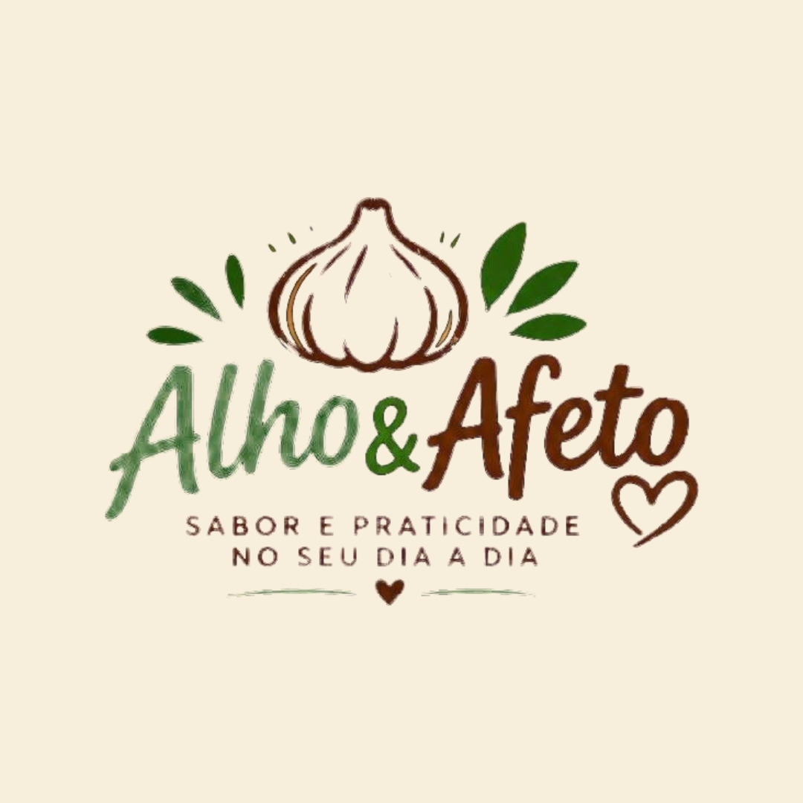
Como postar
Dri, aqui está tudo explicado, com calma. Primeiro o passo a passo, depois o calendário com a legenda de cada dia.
Já postou a sua história e o camarão. Eles não estão mais na pasta. É só seguir daqui pra frente.
Parte 1
Baixar do Drive pro celular
Abra a pasta, depois a pasta do dia, e toque nos três pontinhos do arquivo
No Android, toque em "Fazer download". A imagem vai pra galeria.
No iPhone, toque em "Enviar uma cópia" e depois em "Salvar imagem" (ou "Salvar vídeo").
Carrossel: baixe todas as imagens da pasta, uma por uma (01, 02, 03…).
Parte 2
Copiar a legenda
Desça até o calendário, ache o dia de hoje e toque em "Copiar legenda"
Exemplo: Feijão com gosto de casa começa no tempero… 💚
Pronto, o texto está guardado. Lá no Instagram, quando chegar na hora da legenda, segure o dedo no campo e toque em "Colar".
A legenda também está na pasta do Drive, no arquivo .txt, se precisar.
Parte 3
Postar um carrossel
No Instagram, toque no + lá embaixo
Toque em "Selecionar" e escolha as fotos na ordem: 01, 02, 03…
2º: toque nas fotos na ordem. Aparece o número.
A ordem importa: toque primeiro na foto 01, depois na 02… O número que aparece em cima de cada foto mostra a ordem.
Na tela dos filtros, toque em "Avançar" de novo. Não precisa mexer em nada
Cole a legenda e toque em "Compartilhar"
Pronto! Volte no calendário e toque em "Postei ✓" no dia.
Parte 4
Postar uma foto só
É igual ao carrossel, mas sem tocar em "Selecionar"
Toque no +, escolha a foto, toque em Avançar duas vezes, cole a legenda e toque em Compartilhar.
Parte 5
Postar um vídeo (Reels)
Toque no +, depois em "REEL" lá embaixo, e escolha o vídeo
Depois toque em Avançar, cole a legenda e toque em Compartilhar.
O vídeo já tem a música e a voz. Não precisa colocar música do Instagram.
Parte 6
Stories do Instagram
Toque no +, depois em "STORY", escolha a arte e toque em "Seus stories"
As artes da pasta Stories servem pros stories e pro status do WhatsApp. Uma por dia já é ótimo. Os vídeos também podem ir pros stories.
Parte 7
Status do WhatsApp
Abra "Atualizações" e toque no + do "Meu status"
Toque para adicionar
Hoje, 18:02
Escolha a arte ou o vídeo, escreva um texto se quiser (tem sugestões no arquivo da pasta Stories) e toque na setinha verde pra enviar.
Calendário
O que postar em cada dia
Terça, quinta e sábado, no fim da tarde, quando a gente pensa na janta. Toque em "Postei ✓" depois de postar: o celular guarda.
Novembro
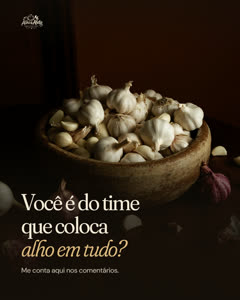
Aqui em casa, alho vai em quase tudo. E aí, você é do time? 🙋♀️ Com carinho, Dri
Você me chama no WhatsApp, eu preparo com carinho e o motoboy leva até você. 💚 Encomendas pelo WhatsApp ou pelo link do perfil. Com carinho, Dri
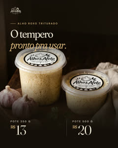
Alho roxo, descascado e triturado, fresquinho no pote. É só abrir e temperar. Encomendas pelo WhatsApp ou pelo link do perfil. Com carinho, Dri
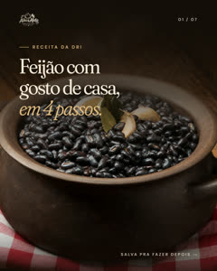
Feijão com gosto de casa começa no tempero. Fiz o passo a passo pra você salvar e fazer hoje. 💚 Encomendas pelo WhatsApp ou pelo link do perfil. Com carinho, Dri
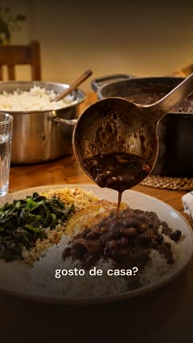
O segredo do feijão de casa é o tempero. E ele já chega prontinho. Encomendas pelo WhatsApp ou pelo link do perfil. Com carinho, Dri
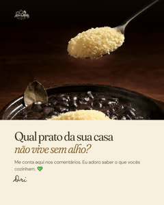
Aqui em casa é o feijão, sem discussão. Me conta o da sua casa aqui embaixo. 👇 Com carinho, Dri
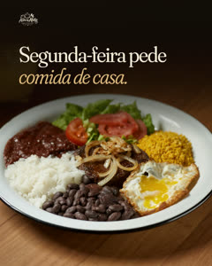
Segunda é dia de voltar pro arroz e feijão. E tudo começa no tempero. Encomendas pelo WhatsApp ou pelo link do perfil. Com carinho, Dri
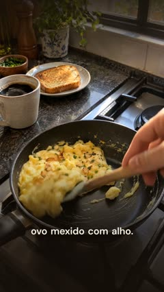
Do café da manhã ao jantar, um pote resolve o tempero do dia. Encomendas pelo WhatsApp ou pelo link do perfil. Com carinho, Dri
Eu fiz a conta e levei um susto. Arrasta pro lado e faz comigo. 💚 Encomendas pelo WhatsApp ou pelo link do perfil. Com carinho, Dri
Esse chiadinho na panela é o meu som preferido da cozinha. E o seu? Encomendas pelo WhatsApp ou pelo link do perfil. Com carinho, Dri
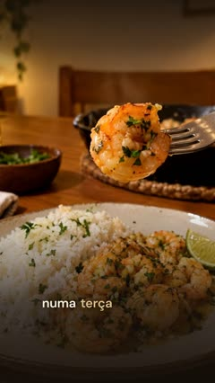
Camarão no alho e óleo numa terça qualquer? Pode. 🍤 Encomendas pelo WhatsApp ou pelo link do perfil. Com carinho, Dri
Frango no forno com alho e limão: aquele cheirinho que chama todo mundo pra cozinha. Salva pra fazer no fim de semana. 💚 Encomendas pelo WhatsApp ou pelo link do perfil. Com carinho, Dri
Domingo é dia de mesa cheia e casa barulhenta. Que o seu seja assim. 💚 Encomendas pelo WhatsApp ou pelo link do perfil. Com carinho, Dri
Dezembro
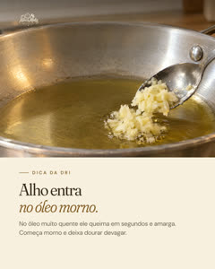
Uma dica que a cozinha me ensinou: alho entra no óleo morno. Assim ele doura bonito e não amarga. Encomendas pelo WhatsApp ou pelo link do perfil. Com carinho, Dri
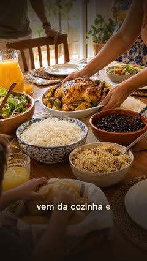
Sabe aquele cheiro que chama todo mundo pra mesa? Ele começa aqui. 💚 Encomendas pelo WhatsApp ou pelo link do perfil. Com carinho, Dri
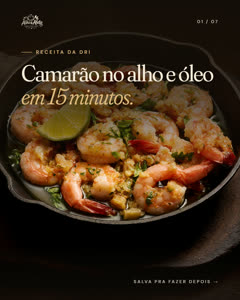
Quinze minutinhos e um jantar de restaurante numa terça qualquer. Salva essa pra semana. 🍤 Encomendas pelo WhatsApp ou pelo link do perfil. Com carinho, Dri
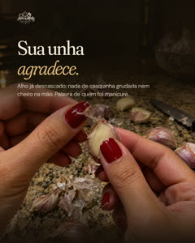
Fui manicure por muitos anos. Pode confiar: descascar alho é o pior inimigo da unha feita. 😅 Encomendas pelo WhatsApp ou pelo link do perfil. Com carinho, Dri
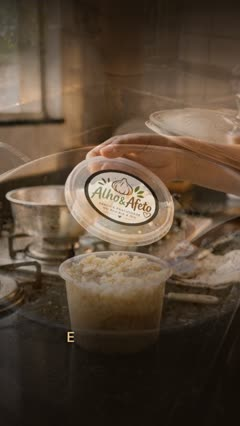
Todo dia tem arroz na mesa. E todo arroz bom começa no alho. Encomendas pelo WhatsApp ou pelo link do perfil. Com carinho, Dri
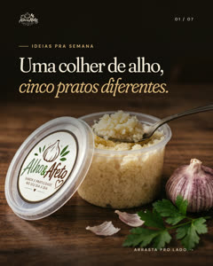
Uma colher de alho e a semana inteira resolvida. Qual desses você faz primeiro? Encomendas pelo WhatsApp ou pelo link do perfil. Com carinho, Dri
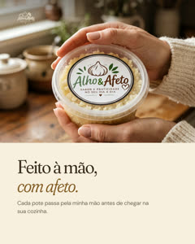
Cada pote passa pela minha mão antes de chegar na sua cozinha. É assim que eu gosto de fazer. Encomendas pelo WhatsApp ou pelo link do perfil. Com carinho, Dri
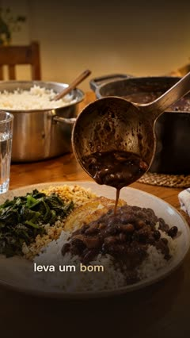
Descascar alho todo dia? Deixa comigo. Encomendas pelo WhatsApp ou pelo link do perfil. Com carinho, Dri
Farofa de alho douradinha em 10 minutos. Vai bem com tudo, né? Salva essa. 💚 Encomendas pelo WhatsApp ou pelo link do perfil. Com carinho, Dri
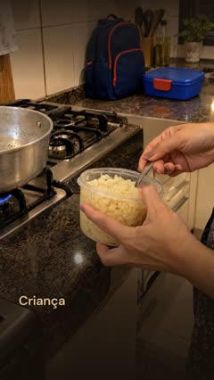
Seis da tarde, a janta por fazer. Uma colher e o tempero tá pronto. Encomendas pelo WhatsApp ou pelo link do perfil. Com carinho, Dri
Cada pote sai daqui com o mesmo cuidado que eu teria com a comida da minha família. Encomendas pelo WhatsApp ou pelo link do perfil. Com carinho, Dri